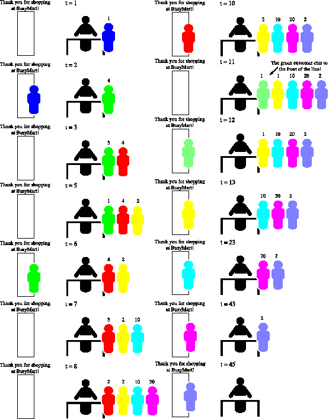

The state of an atomic model is realized by the attributes of the object that implements the model. The internal transition function describes the model's autonomous behavior; that is, how its state evolves in the absence of input. These types of events are called internal events because they are self-induced; i.e., internal to the model. The time advance function schedules these autonomous changes of state. The output function gives the model's output when these internal events occur.
The external transition function describes how the model changes state in response to input. The confluent transition function handles the simultaneous occurrence of an internal and external event. The types of objects that are accepted as input and produced as output are specified with a template argument to the Atomic base class.
The Clerk described in Section 3 demonstrates all the aspects of an Atomic model. We'll use it here to demonstrate how an Atomic model generates output, processes input, and schedules internal events. Below is the Clerk's class definition:
include "adevs.h"
#include "Customer.h"
#include <list>
class Clerk: public adevs::Atomic<IO_Type>
{
public:
/// Constructor.
Clerk();
/// Internal transition function.
void delta_int();
/// External transition function.
void delta_ext(double e, const adevs::Bag<IO_Type>& xb);
/// Confluent transition function.
void delta_conf(const adevs::Bag<IO_Type>& xb);
/// Output function.
void output_func(adevs::Bag<IO_Type>& yb);
/// Time advance function.
double ta();
/// Output value garbage collection.
void gc_output(adevs::Bag<IO_Type>& g);
/// Destructor.
~Clerk();
/// Model input port.
static const int arrive;
/// Model output port.
static const int depart;
private:
/// The clerk's clock
double t;
/// List of waiting customers.
std::list<Customer*> line;
/// Time spent so far on the customer at the front of the line
double t_spent;
};
and here its implementation
#include "Clerk.h"
#include <iostream>
using namespace std;
using namespace adevs;
// Assign locally unique identifiers to the ports
const int Clerk::arrive = 0;
const int Clerk::depart = 1;
Clerk::Clerk():
Atomic<IO_Type>(), // Initialize the parent Atomic model
t(0.0), // Set the clock to zero
t_spent(0.0) // No time spent on a customer so far
{
}
void Clerk::delta_ext(double e, const Bag<IO_Type>& xb)
{
// Print a notice of the external transition
cout << "Clerk: Computed the external transition function at t = " << t+e << endl;
// Update the clock
t += e;
// Update the time spent on the customer at the front of the line
if (!line.empty())
{
t_spent += e;
}
// Add the new customers to the back of the line.
Bag<IO_Type>::const_iterator i = xb.begin();
for (; i != xb.end(); i++)
{
// Copy the incoming Customer and place it at the back of the line.
line.push_back(new Customer(*((*i).value)));
// Record the time at which the customer entered the line.
line.back()->tenter = t;
}
// Summarize the model state
cout << "Clerk: There are " << line.size() << " customers waiting." << endl;
cout << "Clerk: The next customer will leave at t = " << t+ta() << "." << endl;
}
void Clerk::delta_int()
{
// Print a notice of the internal transition
cout << "Clerk: Computed the internal transition function at t = " << t+ta() << endl;
// Update the clock
t += ta();
// Reset the spent time
t_spent = 0.0;
// Remove the departing customer from the front of the line.
line.pop_front();
// Summarize the model state
cout << "Clerk: There are " << line.size() << " customers waiting." << endl;
cout << "Clerk: The next customer will leave at t = " << t+ta() << "." << endl;
}
void Clerk::delta_conf(const Bag<IO_Type>& xb)
{
delta_int();
delta_ext(0.0,xb);
}
void Clerk::output_func(Bag<IO_Type>& yb)
{
// Get the departing customer
Customer* leaving = line.front();
// Set the departure time
leaving->tleave = t + ta();
// Eject the customer
IO_Type y(depart,leaving);
yb.insert(y);
// Print a notice of the departure
cout << "Clerk: Computed the output function at t = " << t+ta() << endl;
cout << "Clerk: A customer just departed!" << endl;
}
double Clerk::ta()
{
// If the list is empty, then next event is at inf
if (line.empty()) return DBL_MAX;
// Otherwise, return the time remaining to process the current customer
return line.front()->twait-t_spent;
}
void Clerk::gc_output(Bag<IO_Type>& g)
{
// Delete the outgoing customer objects
Bag<IO_Type>::iterator i;
for (i = g.begin(); i != g.end(); i++)
{
delete (*i).value;
}
}
Clerk::~Clerk()
{
// Delete anything remaining in the customer queue
list<Customer*>::iterator i;
for (i = line.begin(); i != line.end(); i++)
{
delete *i;
}
}
Consider the simulation of the convenience store described in Section 3 (i.e., with the arrivals listed in Table 3.1). The arrival data is listed again here:
Table 4.1 describes an input sequence that is input to the Clerk model. The algorithm for processing this, or any other, input sequence is listed below. The Atomic model being simulated is called `model', t is the current simulation time (i.e., the time of the last event - internal, external, or confluent), and t_input is the time of the next unprocessed event in the input sequence.
The first step of this algorithm computes the time of the next event as the sooner of the next input event and the next internal event. If the next internal event happens first, then the model produces an output and its next state is computed with the internal transition function.
If the next input event happens first, then the next state of the model is computed with the external transition function; no output is produced in this case. The elapsed time argument given to the external transition function is the amount of time that has passed since the previous event - internal, external, or confluent - at that model.
If the next input and internal event happen at the same time, then the model produces an output and its next state is computed with the confluent transition function. The simulation clock is then advanced to the event time. These steps are repeated until there are no internal or external events remaining to process.
The output trace resulting from the input sequence in Table 4.1 is shown below. It has been broken up to show where each simulation cycle begins and ends and the type of event occurring in each cycle.
-External event---------------------------------------------- Clerk: Computed the external transition function at t = 1 Clerk: There are 1 customers waiting. Clerk: The next customer will leave at t = 2. -Confluent event---------------------------------------------- Clerk: Computed the output function at t = 2 Clerk: A customer just departed! Clerk: Computed the internal transition function at t = 2 Clerk: There are 0 customers waiting. Clerk: The next customer will leave at t = 1.79769e+308. Clerk: Computed the external transition function at t = 2 Clerk: There are 1 customers waiting. Clerk: The next customer will leave at t = 6. -External event---------------------------------------------- Clerk: Computed the external transition function at t = 3 Clerk: There are 2 customers waiting. Clerk: The next customer will leave at t = 6. -External event---------------------------------------------- Clerk: Computed the external transition function at t = 5 Clerk: There are 3 customers waiting. Clerk: The next customer will leave at t = 6. -Internal event---------------------------------------------- Clerk: Computed the output function at t = 6 Clerk: A customer just departed! Clerk: Computed the internal transition function at t = 6 Clerk: There are 2 customers waiting. Clerk: The next customer will leave at t = 10. -External event---------------------------------------------- Clerk: Computed the external transition function at t = 7 Clerk: There are 3 customers waiting. Clerk: The next customer will leave at t = 10. -External event---------------------------------------------- Clerk: Computed the external transition function at t = 8 Clerk: There are 4 customers waiting. Clerk: The next customer will leave at t = 10. -Confluent event---------------------------------------------- Clerk: Computed the output function at t = 10 Clerk: A customer just departed! Clerk: Computed the internal transition function at t = 10 Clerk: There are 3 customers waiting. Clerk: The next customer will leave at t = 12. Clerk: Computed the external transition function at t = 10 Clerk: There are 4 customers waiting. Clerk: The next customer will leave at t = 12. -External event---------------------------------------------- Clerk: Computed the external transition function at t = 11 Clerk: There are 5 customers waiting. Clerk: The next customer will leave at t = 12. -Internal event---------------------------------------------- Clerk: Computed the output function at t = 12 Clerk: A customer just departed! Clerk: Computed the internal transition function at t = 12 Clerk: There are 4 customers waiting. Clerk: The next customer will leave at t = 22. -Internal event---------------------------------------------- Clerk: Computed the output function at t = 22 Clerk: A customer just departed! Clerk: Computed the internal transition function at t = 22 Clerk: There are 3 customers waiting. Clerk: The next customer will leave at t = 42. -Internal Event---------------------------------------------- Clerk: Computed the output function at t = 42 Clerk: A customer just departed! Clerk: Computed the internal transition function at t = 42 Clerk: There are 2 customers waiting. Clerk: The next customer will leave at t = 44. -Internal event---------------------------------------------- Clerk: Computed the output function at t = 44 Clerk: A customer just departed! Clerk: Computed the internal transition function at t = 44 Clerk: There are 1 customers waiting. Clerk: The next customer will leave at t = 45. -Internal event---------------------------------------------- Clerk: Computed the output function at t = 45 Clerk: A customer just departed! Clerk: Computed the internal transition function at t = 45 Clerk: There are 0 customers waiting. Clerk: The next customer will leave at t = 1.79769e+308.
Now lets create a more sophisticated clerk. This clerk interrupts the checkout of a customer with a large order to more quickly serve a customer with a small order. The clerk, however, does this only occasionally. To be precise, let a small order be one requiring no more than one unit of time to process. Moreover, the clerk interrupts the processing of an order at most once in every 10 units of time.
This new clerk has two state variables. The first records the time remaining before the clerk is willing to interrupt the processing of a customer. The second is the list of customers waiting to be served. Here is the header file for the new clerk model, which is called Clerk2.
#include "adevs.h"
#include "Customer.h"
#include <list>
class Clerk2: public adevs::Atomic<IO_Type>
{
public:
/// Constructor.
Clerk2();
/// Internal transition function.
void delta_int();
/// External transition function.
void delta_ext(double e, const adevs::Bag<IO_Type>& xb);
/// Confluent transition function.
void delta_conf(const adevs::Bag<IO_Type>& xb);
/// Time advance function.
double ta();
/// Output function.
void output_func(adevs::Bag<IO_Type>& yb);
/// Output value garbage collection.
void gc_output(adevs::Bag<IO_Type>& g);
/// Destructor.
~Clerk2();
/// Model input port.
static const int arrive;
/// Model output port.
static const int depart;
private:
/// Structure for storing information about customers in the line
struct customer_info_t
{
// The customer
Customer* customer;
// Time remaining to process the customer order
double t_left;
};
/// List of waiting customers.
std::list<customer_info_t> line;
//// Time before we can preempt another customer
double preempt;
/// The clerk's clock
double t;
/// Threshold correspond to a 'small' order processing time
static const double SMALL_ORDER;
/// Minimum time between preemptions.
static const double PREEMPT_TIME;
};
The Clerk2 constructor sets the clerk's clock and interruption timer to zero.
Clerk2::Clerk2():
Atomic<IO_Type>(),
preempt(0.0),
t(0.0)
{
}
The output function of this model sets the exit time of the departing customer and then ejects that customer via the ``depart" port.
void Clerk2::output_func(Bag<IO_Type>& yb)
{
/// Set the exit time of the departing customer
line.front().customer->tleave = t+ta();
/// Place the customer at the front of the line onto the depart port.
IO_Type y(depart,line.front().customer);
yb.insert(y);
// Report the departure
cout << "Clerk: A customer departed at t = " << t+ta() << endl;
}
The external transition function works as follows. When a new customer arrives, the clerk first advanced its clock by the elapsed time. Next, she reduces the time remaining to process the current customer. This reduction reflects the amount of time that has already been spent on the customer's order, which is the time elapsed since the clerk's last change of state. Then the clerk decrements the time remaining before she is willing to interrupt the processing of a large order. This timer is also decremented by the elapsed time.
Now the clerk records the time at which each arriving customer enters the line. This time is the value of the clock. If any of the arriving customers has a small checkout time and the clerk is willing to interrupt the present order, then that customer with the small order goes to the front of the line. This preempts the current customer, who now has the second place in line, and causes the preempt timer to be reset. Otherwise, the new customer simply goes to the back of the line.
void Clerk2::delta_ext(double e, const Bag<IO_Type>& xb)
{
/// Update the clock
t += e;
/// Update the time spent working on the current order
if (!line.empty())
{
line.front().t_left -= e;
}
/// Reduce the preempt time
preempt -= e;
/// Place new customers into the line
Bag<IO_Type>::const_iterator iter = xb.begin();
for (; iter != xb.end(); iter++)
{
cout << "Clerk: A new customer arrived at t = " << t << endl;
/// Create a copy of the incoming customer and set the entry time
customer_info_t c;
c.customer = new Customer(*((*iter).value));
c.t_left = c.customer->twait;
/// Record the time at which the customer enters the line
c.customer->tenter = t;
/// If the customer has a small order
if (preempt <= 0.0 && c.t_left <= SMALL_ORDER)
{
cout << "Clerk: The new customer has preempted the current one!" << endl;
/// We won't preempt another customer for at least this long
preempt = PREEMPT_TIME;
/// Put the new customer at the front of the line
line.push_front(c);
}
/// otherwise just put the customer at the end of the line
else
{
cout << "Clerk: The new customer is at the back of the line" << endl;
line.push_back(c);
}
}
}
The internal transition function begins by decrementing the time remaining before the clerk will interrupt an order. The customer that just departed the store via the output function is then removed from the front of the line. If the line is empty, then there is nothing to do and the clerk sits idly behind her counter. If the line is not empty and the preemption time has expired, then the clerk scans the line for the first customer with a small order. If such a customer can be found, that customer moves to the front of the line. Then the clerk starts ringing up the first customer in her line. Here is the internal transition function for the Clerk2 model.
void Clerk2::delta_int()
{
// Update the clerk's clock
t += ta();
// Update the preemption timer
preempt -= ta();
// Remove the departing customer from the front of the line.
// The departing customer will be deleted later by our garbage
// collection method.
line.pop_front();
// Check to see if any customers are waiting.
if (line.empty())
{
cout << "Clerk: The line is empty at t = " << t << endl;
return;
}
// If the preemption time has passed, then look for a small
// order that can be promoted to the front of the line.
list<customer_info_t>::iterator i;
for (i = line.begin(); i != line.end() && preempt <= 0.0; i++)
{
if ((*i).t_left <= SMALL_ORDER)
{
cout << "Clerk: A queued customer has a small order at time " << t << endl;
customer_info_t small_order = *i;
line.erase(i);
line.push_front(small_order);
preempt = PREEMPT_TIME;
break;
}
}
}
The time advance function returns the time remaining to process the customer at the front of the line, or infinity (i.e., DBL_MAX) if there are no customers to process.
double Clerk2::ta()
{
// If the line is empty, then there is nothing to do
if (line.empty()) return DBL_MAX;
// Otherwise, wait until the first customer will leave
else return line.front().t_left;
}
The last function to implement is the confluent transition function. The Clerk2 model has the same confluent transition as the Clerk in section 3:
void Clerk2::delta_conf(const Bag<IO_Type>& xb)
{
delta_int();
delta_ext(0.0,xb);
}
The behavior of the Clerk2 model is more complex than that of the Clerk model. To exercise the Clerk2, we replace the Clerk model in the example from section 3 with the Clerk2 model and perform the same experiment. Here is the output trace for the Clerk2 model in response to the input sequence shown in Table 4.1. This trace was generated by the print statements shown in the source code listings for the Clerk2 model.
Clerk: A new customer arrived at t = 1 Clerk: The new customer has preempted the current one! Clerk: A customer departed at t = 2 Clerk: The line is empty at t = 2 Clerk: A new customer arrived at t = 2 Clerk: The new customer is at the back of the line Clerk: A new customer arrived at t = 3 Clerk: The new customer is at the back of the line Clerk: A new customer arrived at t = 5 Clerk: The new customer is at the back of the line Clerk: A customer departed at t = 6 Clerk: A new customer arrived at t = 7 Clerk: The new customer is at the back of the line Clerk: A new customer arrived at t = 8 Clerk: The new customer is at the back of the line Clerk: A customer departed at t = 10 Clerk: A new customer arrived at t = 10 Clerk: The new customer is at the back of the line Clerk: A new customer arrived at t = 11 Clerk: The new customer has preempted the current one! Clerk: A customer departed at t = 12 Clerk: A customer departed at t = 13 Clerk: A customer departed at t = 23 Clerk: A customer departed at t = 43 Clerk: A customer departed at t = 45 Clerk: The line is empty at t = 45
The evolution of the Clerk2 line is depicted in Fig. 4.1. Until time 11, the line evolves just as it did with the Clerk model. At time 11, the Clerk2 changes the course of the simulation by moving a customer with a small order to the front of the line.
|  |